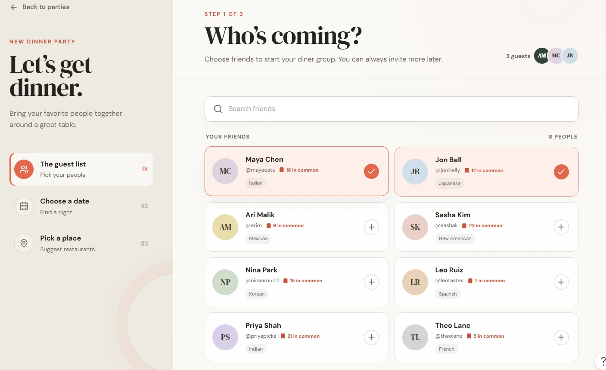
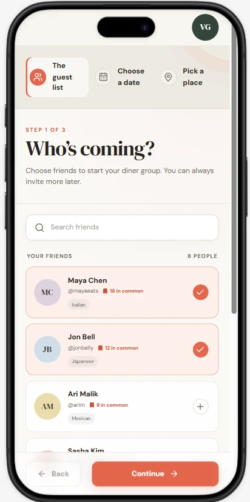
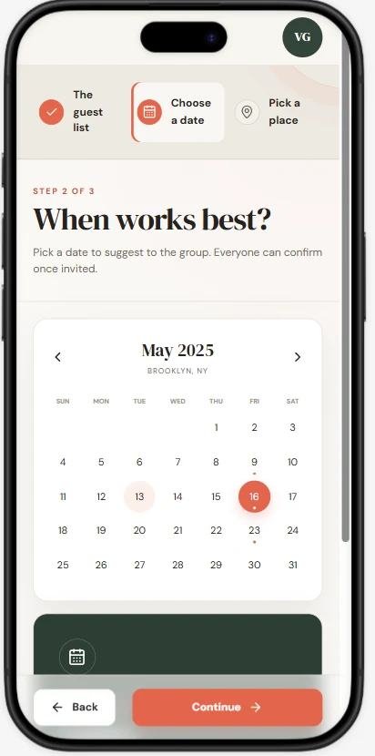
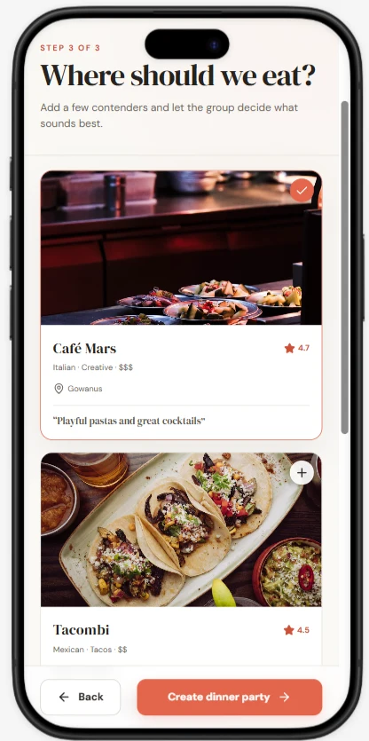

Project / 02
Beli teardown
An independent product analysis proposing “Diner Party,” a shared space for friends to choose where to eat.
- Role
- Independent product analysis

Overview
An independent product analysis proposing “Diner Party,” a shared space for friends to choose where to eat.
Personal analysis from using Beli as a customer. Diner Party and dish ranking are proposed concepts, not shipped Beli features.
Problem
Beli helps people remember and rank restaurants, but choosing where to eat with friends still happens in a group chat. In my own use, overlapping bookmarks were useful, yet acting on them meant messaging friends separately. I also noticed that batches of rankings could crowd the feed, getting directions required another app, and picking one favorite dish did not capture everything I enjoyed.
Approach
I proposed Diner Party: a group brings together its members’ bookmarks and rankings, sees overlaps, and votes on where to go. My mobile mockups follow three steps: choose the guest list, choose a date, and pick a place. I also created a web mockup. Smaller supporting changes would add an Open in Maps link and bundle multiple posts from the same person. A secondary concept extends relative ranking to dishes within a restaurant. It would be optional and offered after the restaurant is ranked, so logging stays lightweight.



Outcome
This is a product proposal, not a launched feature or a measured experiment. I would measure the share of Diner Parties that end with a place chosen and later logged. Supporting measures would include invites, new users joining through an invite, rankings after group meals, and logs with at least two dishes ranked. The key tradeoffs are privacy when sharing bookmarks, a more complex interface, and notification fatigue. I would watch privacy complaints, notification opt-outs, time to complete a log, feed engagement, and logging quality.